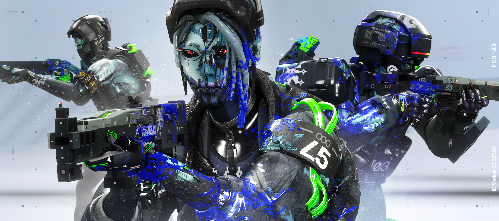
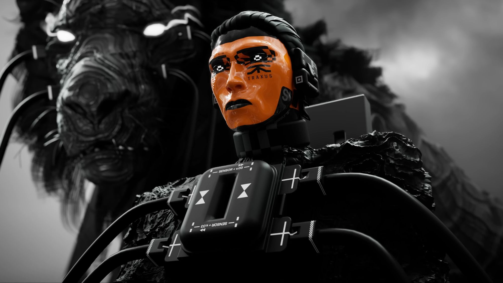
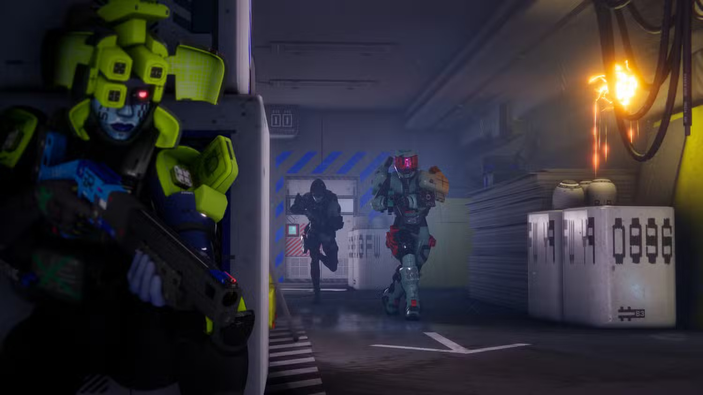
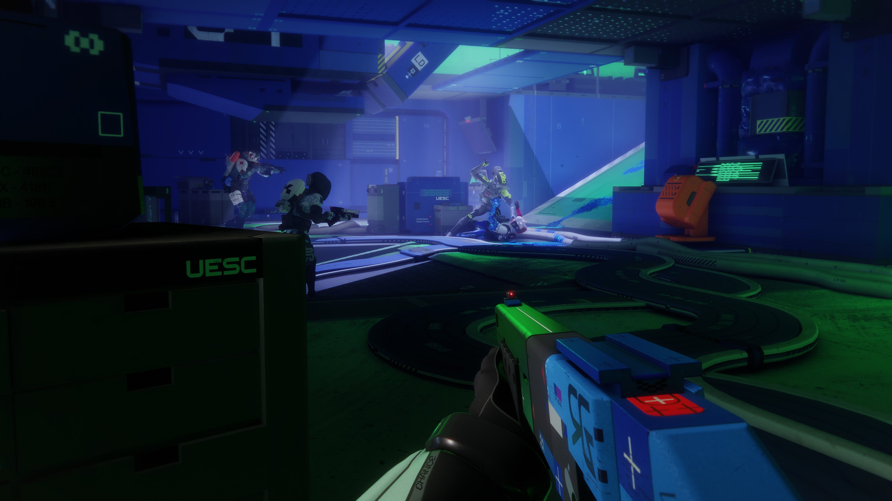
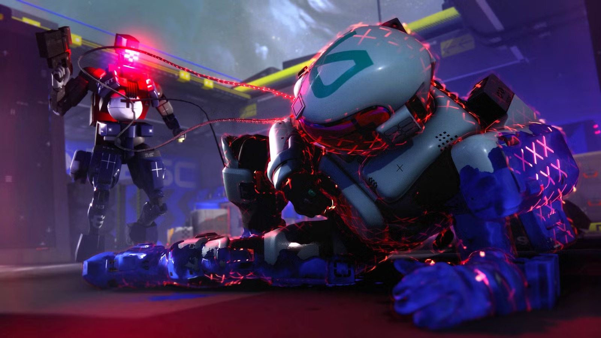

Marathon (2026) is a science-fiction multiplayer first-person shooter developed by Bungie, the studio known for creating franchises like Halo and Destiny. The game is a modern revival of Bungie’s original *Marathon* series from the 1990s, but instead of focusing on a traditional single-player story, the new version is built around a competitive multiplayer extraction-shooter format. Players enter large maps, gather valuable equipment and resources, and attempt to escape alive while competing against other players and environmental threats. The game takes place on the distant planet Tau Ceti IV, where a once-successful human colony mysteriously collapsed. The settlement was originally established by colonists traveling aboard the massive colony ship UESC Marathon. For years the colony thrived, but eventually communications with Earth stopped after reports of strange attacks and unexplained disasters. Long after the colony’s disappearance, faint signals begin to emerge again, attracting powerful corporations and factions who believe valuable technology or secrets may still be hidden on the abandoned world. Instead of sending regular soldiers, these groups deploy mercenaries known as Runners—individuals who have transferred their consciousness into powerful cybernetic bodies designed for exploration and combat. Players control these Runners as they enter dangerous zones across Tau Ceti IV to search for loot, data, and rare technology. Each match involves exploring the environment, fighting AI enemies and rival player squads, and attempting to reach an extraction point before being killed. If a player dies during a mission, they lose everything they brought with them, creating a high-risk system that makes every decision important. The game emphasizes tense encounters, teamwork, and strategic choices. Players often operate in squads, coordinating their abilities and equipment while navigating abandoned facilities, research stations, and ruined infrastructure left behind by the lost colony. The story of what happened on Tau Ceti IV unfolds gradually through environmental clues, data logs, and updates that expand the narrative over time. Combined with its bright retro-futuristic visual style and Bungie’s fast, responsive shooting mechanics, Marathon aims to deliver a tense and competitive sci-fi experience where every mission into the unknown can result in major rewards or devastating losses.




